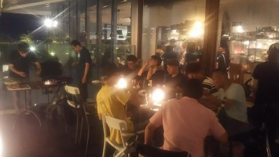

雨がどうだろうと昼過ぎからやきもき、家出る時もまだ降ってたけど枚方市駅に着く頃には完全にあがって、参加人数の誰かに日頃の行いのいい人がいたんだろうなあ、間違いなく違うのは僕の人徳のおかげでしょう（笑）
ギリになって２名ほど減っちゃいましたがそれでも１０名の参加があり、楽しい時間を過ごせました。もりちゃんにまっとんにゆっきーにタカさん、お肉焼いたりとかありがとうね。肉とか少ないかなって思ったらサイドメニューも多くてかなりお腹いっぱいになりました。
まあ、真面目な話もたまにあったけど、ほとんどがくだらん話だったかな（笑）、普段の試合のこととかも話もありましたね。
僕は真正面がやすべえで右隣がテラさんと最悪なポジションで散々いたぶられました（涙）
ゆっきーの将来の祝い時にはなかやんのリフティングをしてもらう計画で大盛り上がりだったかな、あとはわだっちがトクさんに絡みまくってた感があったなあ。
タカさんのぶち切れ事件にみんな唖然としていたなあ。あの温厚なタカさんが（笑）
それより、びっくりばっくりだったのが相変わらずワインを飲んだら意味不明なオカちゃん、うちのグループの方がやかましかったのに、オカちゃんが話している時に横の女性グループが盛り上がっていると「うっせえ」と暴言、あげくの果てには頼んだ瓶ビールを店から出る時にビンごと持ちだしてエレベーターとか降りながらラッパ飲み、ありえへん（笑）
まあ、みんな楽しくわいわいと過ごせました。今回参加出来なかった人はまたの機会に参加のほどよろしくお願い致します。
本日参加メンバー全員、明日の試合も出席です。明日も頑張りましょう、お疲れ様でした。
先日試合に参加された皆様おつかれさまでした。
今回のハイライトは以下のとおりでしょう。
①エースタクちゃんの復活
②シュト＆ダッチャンの見事なデビュー戦
③オカチャンのゴール
④最後のゲームまで落ちない運動量(GKでバテてる俺以外)
⑤安定したプレー(GKの俺以外)
⑥マッサンの入りそうでなかなか決まらないゴール
⑦ナカヤンの寝坊
以上
次の試合も宜しくお願いします?
昨日の試合、曇り予報やったのにめっちゃ晴れましたね。
ようやく点の取り方を思い出してきました。でもまだ思ってるコースにシュートできていないのでまだまだっすわ。トシキ先輩について行けるように頑張るっス（笑）
暑い中、チーム全体で走り負けしなかったので、両チームともに勝ち越せてよかったですね。
最後の試合で、ペナ内でファウルされた時に右太もも打撲しました。来週までに治るといいのですが。。。
私用で練習に参加できない日が続いてスランプだったので、この試合に照準をあわせて約1ヶ月間、毎週練習に参加して挑んだので、結果が出て一安心。ほんま練習って大事ですわ。それと、毎回思いますけどエガリテのサッカーは楽しい。
参加された皆さん、お疲れ様でした。
蒸し暑かったー。
今日は舞洲人さんの招待でSPARKさんとの巴戦でした。お相手して頂いてありがとうございました。
今日は遅刻早退を含めて１８名の参加がありました。この時期はそれくらいの人数がいるとほんと助かります、SPARKさんがギリギリで途中で怪我とかで大変だったのが忍ばれます。
夏場は最低でも１５人くらいは欲しいのでまた少ない時は参加の協力をお願いします。
さて、まだ体調が万全でないのは言い訳として暑さで動けなかってぼーっとしてた中なのであまり覚えてないですがいつも通り試合ごとにカキコしたいと思います。
１本目はスパークさんとでした。２０分。全体的に攻守切り替えで攻めたり守ったりでしたね。バックではトクさんが頑張っていたけどプチ空回りの時にゆっきーがよくフォローしてました。うちはまあ僕も良くしますが一人はスイーパー的な感じの動きが出来るバックが居るといいかなあって思います。
ボランチではもりちゃんも良く動いてました。
さて、ここからは僕のへっぽこプレーの紹介です。
リューゾー撮影の動画に思いっきりアップで載ってましたが、ボールをあごにくらって後方にダウン、そのこぼれ球がむらっちに渡ってそこからテラさんへパス、テラさんがドリブル少ししてシュートが決まりました。あんな攻撃の起点はいらんわ（笑）
後は結構得意なはずの角度無い所からのループがバーに当たったり、右足の威力だけのノーコンシュートとかオフサイドと思って途中でプレー止めたりと散々でした。
テラさんへの左足のクロスはぷち気持ちよかったなあ。
やっぱり１本目からハーフはきっついなあ。
２本目は舞洲人さんと２０分。これもだっちゃんとトクさん合作の動画があるから観てちょ。
シュトがキックオフゴールを狙ったけど、まだまだ青いな（笑）、今日は初試合だったのでまた感想をカキコお願いします。同じく初試合のだっちゃんは僕の前に書いてくれてたわ。ありがとね。
この試合はまあ仕方ないけどセンターバックを普段しているメンバーがいなかったので声かけとかフォローとかが少しちぐはぐで結構サイドの裏にフリーの選手がいて、まんちゃんのナイスセービングもあったけどコーナーからフリーでダイレクトで決められちゃいました。
３本目はスパークさんと１５分。フリーキックでまんちゃんがナイスセーブがあったなあ。本日はむらっちユニのリューゾーがドリブルして、そこからテラさんへパス。たぶんオフサイドやった気が・・（笑）、でも審判が全てさ♪。パスを受けてそのままシュートして、久々の早退の時には決めて帰るテラさんが復活しましたね。
後はたくちゃんのミドルシュートもあったかなあ。
本家もりちゃんが動画撮ってくれてました、３本もUPしてくれてありがとね。
４本目の前にスパークさんの助っ人に入った寝坊助なかやんの空回りコントの動きはおもろかった。
４本目は舞洲人さんと１５分。
ポジションはゼロトップみたいな感じでしましたがバックとの距離が短くて、いい感じだったと思います。バックも安定してました。
ボランチのはずのなかやんがフォーワードより前に行って果敢に攻めてましたね。でも取られそうになったら、周囲からフリーの選手が声かけしたらなかやんからパスじゃ無くて相手が声につられてコースをあけちゃって結局シュートまで打ってたなあ。
ゴールはうちが決めました。僕がヘディングで競ってわだっちへパス、中央でわだっちがいい感じでキープして溜めを作ってくれてその時に上がってきたタクちゃんへパス、タクちゃんお得意の足の間でのボールタッチでデフェンスを交わしてそのまま冷静にシュート、お見事でした。タクちゃんが点を取ってくれると個人的にはほっとします。
５本目はスパークさんと１５分、久々のゴールはおかちゃんでした。パチパチ。いつも通り素晴らしいまえちゃんのループパスにおかちゃんが2列目から上がってきて、ボールが跳ねている状態でキーパーが前に出ているのも見てだと思うんだけどそのままトラップせずにさらにループシュートでキーパー上を超えてゴール。今日は奥さんにご馳走を作ってもらっているでしょう。今後も仕掛けてどんどん決めて欲しいですね～。でもおかちゃんがキープした時に何回か縦に貰いに行ったんだけどパス来なかった（涙）
個人的にまじで過呼吸状態で動けん時あったわあ、右サイドから切り込んで中にいるむらっちへパスしたけどむらっちも動けんかったらしい（笑）
オフサイドで最後は足に適当に当たっただけだったけど左からのだっちゃんのクロスに走りこんでゴール枠外してるし、あれがオフサイドじゃなくて狙っててもやっちまってた感が・・・（涙）
相手のフリーキックがスピードもあり、ゴール枠も捉えてたのをまんちゃんがナイスセーブイングしてました。
最後は舞洲人さんと２０分（その後の試合がSPARKさんが人数的に厳しくなってなくなったので５分長くなってました）
観ているほうは長いなあって思ってました。
舞洲人さんも結構体力消耗してたのもあってかうちが攻めてましたね。
ゆっきーからのパスをタクちゃんが受けて少しドリって冷静にシュート、ゴール決まりました。
以外にも右サイドでバックからボールを奪ってそのままゴールへドリブル、狙いすまして右サイドネットにゴール決めてタクちゃんも久々のハットトリックですね。トシキへ宣戦布告のコメント待ってます。
それ以外にも切りこんでファール貰ってそれをまえちゃんが冷静に決める感じでタクちゃん大活躍でした。
わだっちもワンツーでオフサイドになったけど惜しいプレーやシュートまでもう少しとありましたが、今日の気温とか試合数考えてあれだけ動ける体力はほんと脱帽です。
最後は０点でと思いましたがまんちゃんも必死に体はって止めたりしてくれたけど最後にどかーんと決まられちゃいましたね。接触プレーあったけど大丈夫だったかな。
まあ、そんな感じの1日でした。参加された皆さん、よかったら各自感想とかカキコお願いしますね。オカちゃんは必須で（笑）なんなら奥さんからでもいいよ（笑）
お疲れさまさまでしたー。
本日初めてゲームに参加させていただきました。
ドキドキでした。迷惑をかけないようにしなければ、とだけ考えてましたがご迷惑かけ申し訳ありません。
練習、紅白戦の体験から暖かく迎え入れていただき感謝です。
もう私は51歳だし、15年以上もしてないし、もうサッカーはすることはないだろうなと思っていました。
でもしたい、するならもう今しかない、そんな私でも受け入れてくれるクラブははたしてあるのだろうかと思っていました。
今、サッカーができていることが不思議なぐらいです。
サッカーになってませんが(^^;;
皆さんの仲間になることができてとても嬉しいです。
まだまだ諦めず、少しでもうまくなれるようになれるように
がんばりたいと思います(^.^)
サッカーとの出会いは、たまたま小学校の時になんとなく入ったことがきっかけです。
面白かったし弱小でしたが中、高もその流れで続けてました。
会社員時代はスポーツ業界でしたので、素人を集めてサッカー部をつくりなんちゃってサッカーを業界内でしていました。
その同時の戦術は今では古典的なものでしたので、サイド はひらいて走ってなんぼの世界でした。
左ききで強く蹴ることができることぐらいが、わたしの唯一の特徴です。
年ですが適当にいじってもらったほうが嬉しい方なので、これからもよろしくお願い致しますm(._.)m
祝日に活動ってチーム始まって以来かな？土曜日はあるけどねー。
今日も昨日の雨の影響で大塚グランドはジュクジュクなところもあったけど、三島江だったら半分池状態だったかも？なんとか水たまりっぽいところを避けて活動出来ました。
体験参加も含めて何だかんだで１５名の参加がありました。
集合が遅くなったのもあり、いきなりミニゲから開始でした。途中からはぶっちとむらっちがキーパーしてくれたりで結構いい感じで楽しくできましたね。
タクちゃんがニアに飛び込んでヒールシュートやバイシクルシュートしたり、入ってないってぶっちが嘘こいたブレ玉シュートとか活躍してましたね。
僕は風邪の影響が長引いて体が動かず、おかちゃんに股抜きくらうは、抜こうって思ったらボールの上に乗っかってハデにこけるはパスミスばっかで最悪でした、ぶっちからのクロスを頭であわしたくらいかな。
むらっちがわき腹を痛めたみたいで心配です、無理せずきちんと治してからまた参加してくださいね。
来週は試合です、集合時間をしっかり守ってくださいね。
本日、参加された皆さんお疲れさまでした。
たなばたー、一年に一回あるかないかの参加人数で体験参加合わせて２３名とびっくりでした。
正直ね、今日は超体調不良であんまり覚えてないんよ、最後休んでたし、家に帰ってたら３８℃くらい熱あったし、今は少しましになったのでカキコしちょるよ。
何とかグランドでと思ってもがいてたけど無理やったなあ、来週はグランド取ってるから多くの参加者たのんますね。
今日はほんと点が入らんかったなあ、最後の試合にまとぞうが決めた？近くでIKKOが「まぼろし~」って叫んでたからなかったのかな？？
話は変わりますがビブ忘れをしないようにお願いしますね。
まあ、いつも通り楽しく出来てたと思います。大勢の参加お疲れさま。
内容はまあ参加したメンバー多いから今日は特になしで。
昨日の雨の中、参加された皆さんお疲れ様でした。
今年も半分が終わりましたね。上半期の結果速報です。
２０１９年１～６月
【得点ランキング】
10点 トシキ
3点 むらっち
2点 テラさん
1点 もりちゃん、まえちゃん、タカさん、リューゾー、タクちゃん、カズ
【アシストランキング】
3本 タカさん、むらっち
1本 テラさん、タクちゃん、まっさん
2019年、上半期の結果は以上のようになりました。
得点はトシキの独走ですね！今後、彼へのパスは、キラーパスで宜しくです。（笑）去年の年間17得点のペースを上回っています。記録更新頑張ってください！
アシストはタカさんとむらっちが競う展開になっています。
後半戦も楽しく頑張って行きましょう～♪
ほんと嫌な時期だなー、昨日も夕方からいくつもの天気予報とか見てて、夜中の降る雨次第かなって思って、朝起きたら雨は降ってないので、とりあえずグランド確認に7：30頃行ったら、さすが水はけ悪さで天下の三島江、コートの淀川側の１/３が池状態、スポンジレベルでは無かったので管理人のおっちゃんに利用不可を確認し、試合は中止確定。相手チームさんにメールしました。対戦して頂く予定でしたジュネオさん、アモールさんまたの機会によろしくお願いします。
んで、いつもの場所に行ったら、普段の場所はやっぱり水たまりがあって、ただ、一番奥側は水たまりもなく、ぬかるみもあまりなさそうだったのと天気予報とか見てたら１１時くらいまで雨は大丈夫そうって感じだったので急遽、１１時くらいまでの練習に切り替えました。
練習の参加はちょっと少なくなって最初９名、少し遅れて１名で１０名でいつもどりミニゲしてました。時折雨が強まったりしましたがもう濡れても一緒って感じで楽しくしてました。僕も含めて何名かはすってんころりんしたりありましたね。
ただ、予想と違って１０時くらいから雨足が強まってきて、風も出てきて、広場も水たまりが出来て来たので１０：３０終了予定に変更しましたが、最後の方は横殴りの結構な雨でした。それでもまあ童心にかえって笑いアリーのでしてたら、ふらっと１台やってきて、急遽参加でエロリッチハマーが来たけど、最後の２０分の長め開始したばかりで、みんなで今すぐ終ろうかとか企んだけど結局は最後１５分くらいボール蹴って最終的には１１名の参加になりました。
まあ、そんな感じの一日でした。短い時間で雨でしたが参加された皆さんお疲れ様でした。